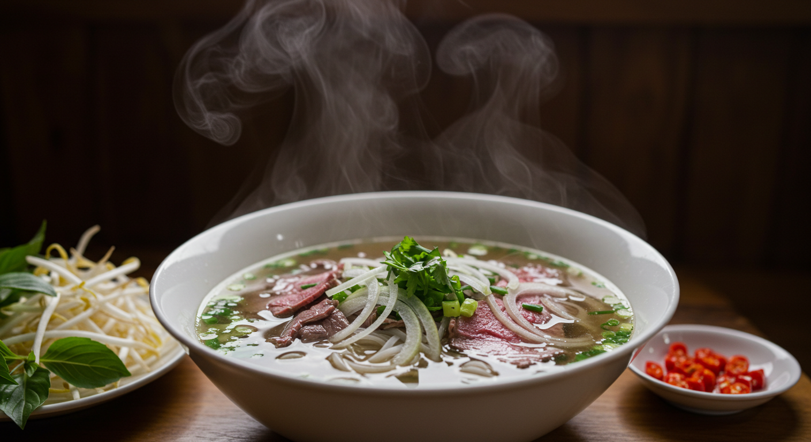
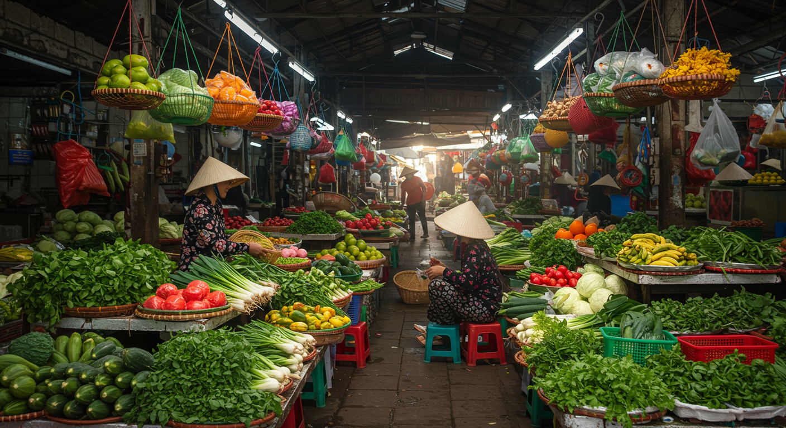
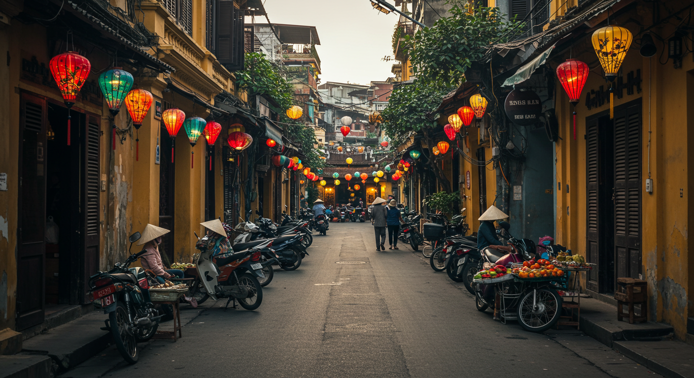

베트남의 맛있는 음식들
음식
여행
베트남의 대표적인 음식들
베트남은 독특하고 풍부한 음식 문화를 가진 나라입니다. 오늘은 베트남의 대표적인 음식들을 소개해드리겠습니다.

1. 쌀국수 (Phở)
베트남을 대표하는 음식으로, 깊은 맛의 육수와 쫄깃한 면발이 특징입니다.

2. 반미 (Bánh mì)
프랑스 바게트에 베트남 특유의 재료를 넣은 샌드위치입니다.

3. 반쎄오 (Bánh xèo)
노란 크레페 같은 겉모습에 새우, 숙주나물 등을 넣은 음식입니다.
4. 분짜 (Bún chả)
하노이의 대표적인 점심 메뉴로, 구운 돼지고기와 쌀국수를 곁들여 먹습니다.
베트남 음식의 특징은 신선한 재료와 깊은 맛의 조화입니다. 각 지역마다 특색 있는 음식 문화를 발전시켜왔습니다.